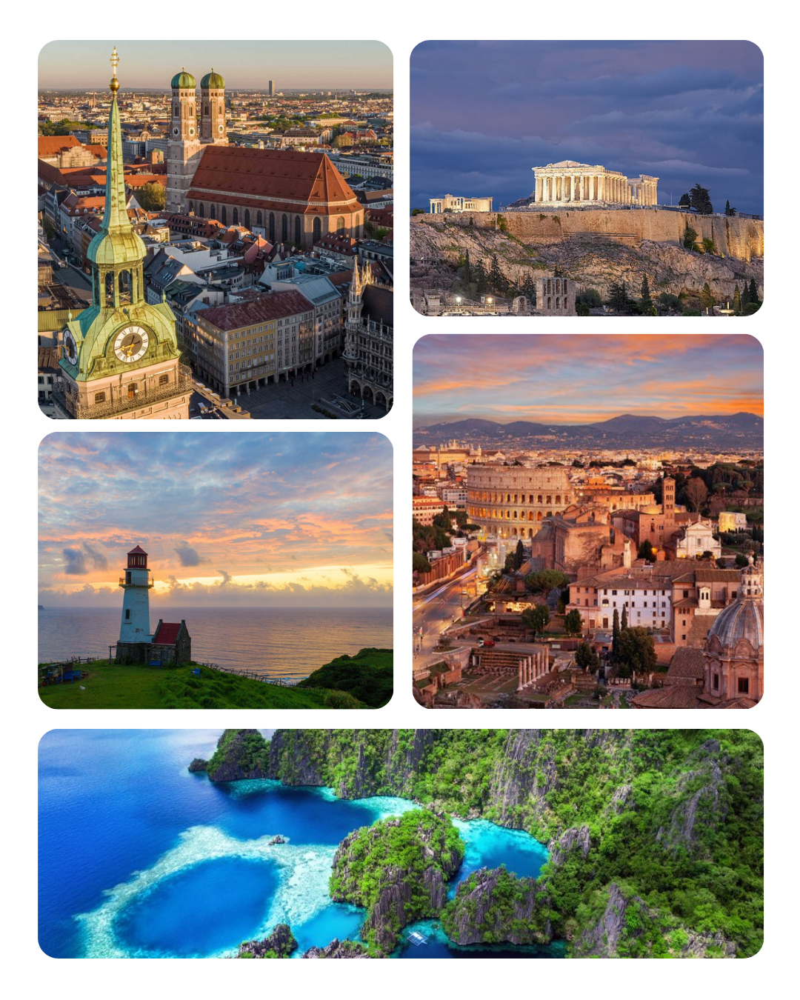

I want to explore and travel the world beyond the comfort of my home. I want to learn and encounter new experiences; new scenery to appreciate, from architecture, history, art, and culture to the people, food, and mementos I will collect from my travels around the world. I want to travel, to truly experience life and create rich memories.
The pictures below show my top five (5) dream destinations that I wish to visit.
Instructions: Hover over an image, then click the section once you see the name of the location.

Go to Top